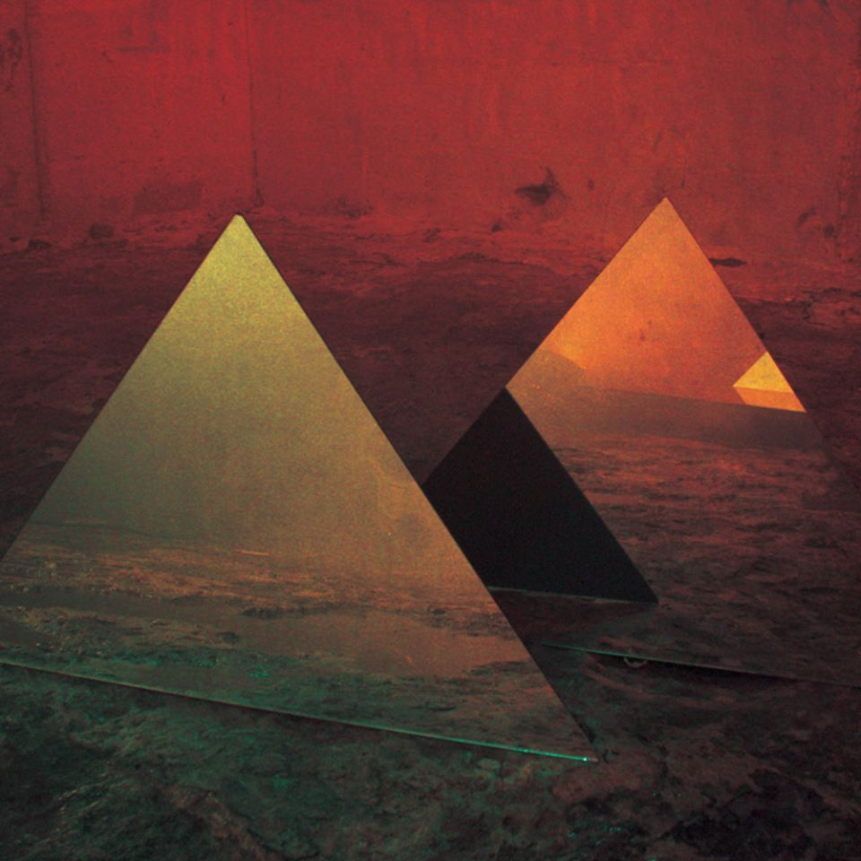
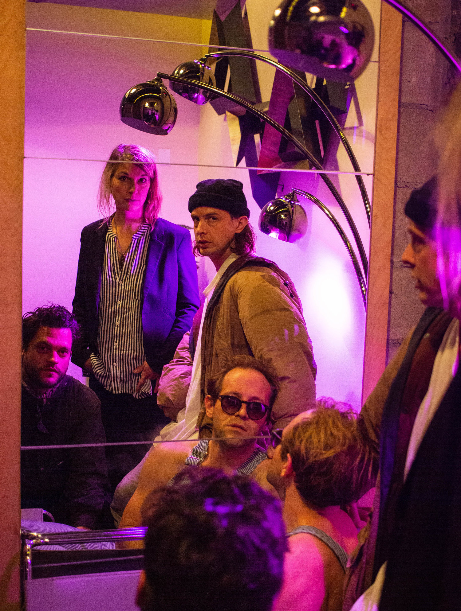
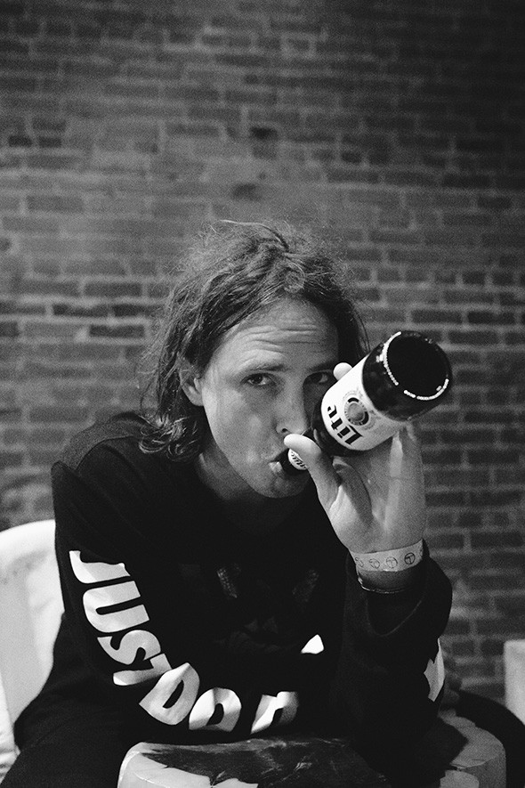

Double Vanity, by BRONCHO
| Double Vanity: | |
|---|---|
| 1. | All Time |
| 2. | Fantasy Boys |
| 3. | I Know You |
| 4. | Jenny Loves Jenae |
| 5. | Highly Unintentional |
| 6. | Señora Borealis |
| 7. | New Karma |
| 8. | Speed Demon |
| 9. | Soak up the Sun |
| 10. | Two Step |
| 11. | Wanna |
About the Album:
Double Vanity is Broncho's third album. Beginning with their debut Can't Get Past the Lips, a year later coming out with Just Enough Hip to Be Woman in 2014, it took two years for Double Vanity to hit the planet. Double Vanity found me right after I moved to the city, and has helped ground me to who I am during the rough transitions I've experienced since moving from all familiarity into a very different environment. Released in 2016, Double Vanity sends the listener into a timeless place of rock 'n roll trance of glowing red and yellow. This is the perfect album to listen to while getting things done or just cruising. Double Vanity is a great album if I need to get pumped for an evening event or chill to some of the calmer tracks on the album. When thinking about my favorite tracks from this album, it seems impossible to choose just one. I will start with Two Step & Wanna as top favorites, followed by All Time, Señora Borealis, & New Karma. This album is so upbeat and fun to jam to, and the live shows are even better! If you listen to this album and you like what you experience, Broncho's latest album Bad Behavior is another pure golden record that was released in 2018.
About the Artist:
Broncho came to the world from Oklahoma, with their four-person makeup of Ryan, Penny, Ben, & Nathan. They started making music in the mid-2000's and I hope they never stop because their sound is so unique and fulfilling. This group is very down-to-earth and fun, I am lucky enough to have had the opportunities to hang out with them after shows because of a mutual connection. Broncho is a fun and kind group of musicians who make incredible and fun music and I love them!
 